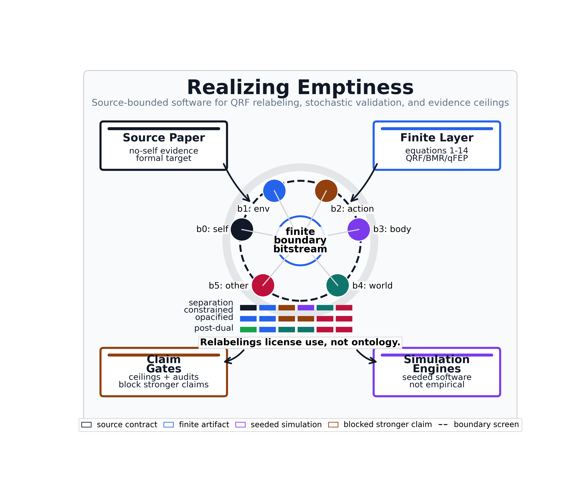

Realizing Emptiness Artifact Dashboard
static artifact dashboard; not empirical evidence, not a physical qFEP realization, and not a clinical, neural, awakening, or practice-efficacy claim

Argument Arc
The no-self-evidence argument as a navigable sequence from boundary screen to active-inference profile execution; each stage links to its lead figure. This is a reading aid over finite-software artifacts, not an empirical or ontological claim.
| # | stage | what it shows | lead figure |
|---|---|---|---|
| 1 | Boundary screen | Six software channels b0-b5 carry the evidenced bitstream. | qrf_sector_situation |
| 2 | Three sector frames | The same bits read under separation-constrained, opacified, and post-dual QRF lenses. | qrf_channel_relabeling_ledger |
| 3 | Indistinguishability / permission | Boundary use is licensed; boundary ontology is not, with a failing perturbation control. | boundary_use_vs_ontology |
| 4 | Separation-prior emergence | The prior earns accuracy only when boundary channels are action-contingent. | separation_prior_emergence |
| 5 | BMR lifecycle | Useful then dispensable: pruned at high metacognitive access at the weakest precision. | separation_prior_net_value |
| 6 | Active-inference profile execution | Each frame is run as an explicit profile-specific pymdp generative model. | pymdp_profile_comparison |
| 7 | Finite quantum scope | Implemented extension engines stay finite-software, with blocked external classes. | finite_quantum_scope_summary |
{kind=link}
{kind=link}
{kind=link}
{kind=link}
{kind=link}
{kind=link}
{kind=link}
Roadmap/TODO Governance
| class | count | ids |
|---|---|---|
| implemented finite engines | 17 | two_qubit_separability_entropy, arbitrary_two_qubit_entanglement_audit, chsh_contextuality_witness, chsh_measurement_cover_table, general_measurement_cover_polytope_audit, qrf_basis_invariance_toy, boundary_landauer_entropy, thermodynamic_channel_cost_audit, two_qubit_dephasing_channel, full_open_system_qfep_dynamics, quantum_trajectory_unraveling, many_body_boundary_screens, sparse_boundary_screen_scaling_audit, general_sheaf_contextuality_engine, qrf_transformation_library, qrf_frame_covariance_toy_audit, empirical_adapter |
| blocked future classes | 5 | re-3, re-4, re-13, re-14, re-15 |
TODO And Claim Governance
| check | value |
|---|---|
| readiness controls pass | True |
| future rows blocked | True |
| TODO audit controls pass | True |
| stale TODO rows | 0 |
| historical backlog rows | 0 |
| blocked-class violations | 0 |
Manifest Coverage
| metric | value |
|---|---|
| generated artifacts | 146 |
| manifest entries | 147 |
| unmanifested generated paths | 0 |
| missing manifest paths | 0 |
Dependency Graph
| metric | value |
|---|---|
| node count | 83 |
| edge count | 184 |
| quantum nodes present | True |
| required quantum nodes | quantum_boundary_entropy, quantum_open_system_dynamics, quantum_measurement_contextuality, qfep_boundary_hamiltonian_dynamics, quantum_trajectory_unraveling, many_body_boundary_screen_sweep, sheaf_contextuality_obstruction_audit, qrf_transformation_covariance_audit, empirical_adapter_provenance_audit, arbitrary_two_qubit_entanglement_audit, general_measurement_cover_polytope_audit, thermodynamic_channel_cost_audit, sparse_boundary_screen_scaling_audit, qrf_frame_covariance_toy_audit, multipartite_witness_suite_audit, tensor_network_benchmark_audit, collision_model_thermalization_audit, no_signaling_scenario_library_audit, n_cycle_contextuality_library_audit |
pymdp Runtime Diagnostics
| metric | value |
|---|---|
| runtime controls pass | True |
| trace rows | 72 |
| profile models hashed | 3 |
| deterministic replay equal | True |
| captured runtime dependency warnings | 1 |
| max policy posterior residual | 5.96e-08 |
| max weighted EFE residual | 1.33e-08 |
| claim boundary | structured pymdp runtime diagnostics over finite software traces; not empirical data, not a neural measurement, not practice-efficacy evidence, and not quantum-dynamical evidence |
Stochastic Simulation Engines
| engine | status |
|---|---|
| active-inference ensemble | True |
| criticality ensemble | True |
| quantum trajectory unraveling | True |
| runs per profile | 128 |
| quantum trajectories per rate | 1024 |
| claim boundary | seeded stochastic simulations only; not empirical, neural, clinical, practice-efficacy, or physical qFEP evidence |
Statistical Robustness
| audit | status |
|---|---|
| aggregate controls | True |
| stochastic effect sizes | True |
| BMR resampling | True |
| quantum trajectory convergence | True |
| effect-size rows | 18 |
| BMR resampling rows | 45 |
| trajectory counts | 16, 64, 128, 256, 512, 1024, 2048 |
| claim boundary | finite seeded simulation robustness only; not empirical inference |
Method And Contract Governance
| gate | value |
|---|---|
| source-fit controls | True |
| source themes covered | 9 |
| QRF/BMR not quantum-only | True |
| claim-context controls | True |
| claim-context rows | 15 |
| role compatibility failures | 0 |
| proxy reader overclaims | 0 |
| missing future-evidence boundaries | 0 |
| missing manuscript section bindings | 0 |
| missing figure bindings | 0 |
| claim RedTeam controls | True |
| claim RedTeam rows | 15 |
| unresolved claim sections | 0 |
| unresolved claim figures | 0 |
| missing claim RedTeam boundaries | 0 |
| claim RedTeam reader overclaims | 0 |
| claim RedTeam risky sentences | 0 |
| method count | 8 |
| negative-control count | 18 |
| all methods have controls | True |
| all methods have hard constraints | True |
| artifact contracts | 147 |
| contract controls pass | True |
| missing schema paths | 0 |
| duplicate contract ids | 0 |
Review Hardening
| artifact | value |
|---|---|
| local release manifest | True |
| release scope | local_private_artifact_bundle_not_public_release |
| public publication performed | False |
| hashed release files | 441 |
| external review response audit | True |
| review response rows | 7 |
| public independent reproduction | blocked_external_publication |
| figure parameter ledger | True |
| figure parameter rows | 59 |
| neutral QRF label ablation | True |
| independent quantum cross-check | True |
| BMR alternative priors | True |
| claim boundary | local private artifact package only, not public independent reproduction; not empirical, clinical, neural, practice-efficacy, contemplative-attainment, or physical qFEP evidence |
Visual QA
| check | value |
|---|---|
| semantic style audit | True |
| legibility audit | True |
| style rows | 59 |
| legibility rows | 59 |
| missing roles | 0 |
| low-contrast semantic roles | 0 |
| undersized figures | 0 |
| below-floor text contracts | 0 |
| missing legends or colorbars | 0 |
| overlapping text layouts | 0 |
| overlapping panel titles | 0 |
| cropped text labels | 0 |
| legend/axis collisions | 0 |
| layout failures | 0 |
Manuscript And Figure Audits
| check | value |
|---|---|
| references resolve | True |
| no supplement figure duplication | True |
| balanced quantum figure placement | True |
| cover graphic unnumbered/source-mapped | True |
| claim intensity scoped | True |
| unresolved references | 0 |
| duplicate supplement images | 0 |
| technical quantum figures in main | 0 |
| governance figures in main | 0 |
| governance figures missing from supplement | 0 |
| governance figures repeated in supplement | 0 |
| risky claim sentences | 0 |
Figures
graphical_abstract_cover · qrf_boundary_screen_geometry · qrf_channel_relabeling_ledger · qrf_invariance_policy_flow · qrf_sectorisation_map · boundary_indistinguishability · qrf_reference_frame_geometry · bmr_free_energy_decomposition · bmr_pruning_phase_diagram · simulation_sensitivity_heatmap · finite_quantum_scope_summary · quantum_boundary_entropy_landscape · quantum_contextuality_witness · quantum_measurement_contextuality_table · quantum_local_polytope_audit · quantum_open_system_dynamics · qfep_boundary_hamiltonian_dynamics · quantum_trajectory_unraveling · many_body_boundary_screen_sweep · sheaf_contextuality_obstruction_audit · qrf_transformation_covariance_audit · empirical_adapter_provenance_audit · arbitrary_two_qubit_entanglement_audit · general_measurement_cover_polytope_audit · thermodynamic_channel_cost_audit · sparse_boundary_screen_scaling_audit · qrf_frame_covariance_toy_audit · quantum_roadmap_readiness_matrix · pymdp_profile_comparison · posterior_trajectory · pymdp_runtime_validation_dashboard · criticality_proxy_panels · criticality_stochastic_ensemble · criticality_signatures · compassion_scope_widening · separation_prior_emergence · internal_cut_unmeasurability · practice_policy_scope_map · stochastic_effect_size_forest · bmr_robustness_resampling · quantum_trajectory_convergence · visual_semantic_palette_ledger · method_assumption_failure_map · claim_source_validation_graph · scholarship_coverage_matrix · claim_support_matrix · manuscript_claim_audit · evidence_ceiling_stress_matrix · claim_context_evidence_ladder · formalism_operation_map · qrf_sector_situation · boundary_use_vs_ontology · separation_prior_net_value · multipartite_witness_negativity · tensor_network_scaling · collision_model_relaxation · n_cycle_contextuality_panel · data_processing_monotonicity · markov_blanket_discovery
{kind=link}
{kind=link}
{kind=link}
{kind=link}
{kind=link}
{kind=link}
{kind=link}
{kind=link}
{kind=link}
{kind=link}
{kind=link}
{kind=link}
{kind=link}
{kind=link}
{kind=link}
{kind=link}
{kind=link}
{kind=link}
{kind=link}
{kind=link}
{kind=link}
{kind=link}
{kind=link}
{kind=link}
{kind=link}
{kind=link}
{kind=link}
{kind=link}
{kind=link}
{kind=link}
{kind=link}
{kind=link}
{kind=link}
{kind=link}
{kind=link}
{kind=link}
{kind=link}
{kind=link}
{kind=link}
{kind=link}
{kind=link}
{kind=link}
{kind=link}
{kind=link}
{kind=link}
{kind=link}
{kind=link}
{kind=link}
{kind=link}
{kind=link}
{kind=link}
{kind=link}
Claim Ceilings
| claim | support count | status | stressors |
|---|---|---|---|
| artifact_release_readiness | 3 | empirical_gap, neural_measurement_boundary, normative_boundary, practice_boundary, quantum_gap, runtime_dependency, source_role_boundary, surrogate_scope | |
| bmr_prunes_sigma | 7 | empirical_gap, neural_measurement_boundary, normative_boundary, practice_boundary, quantum_gap, runtime_dependency, source_role_boundary, surrogate_scope | |
| compassion_proxy_boundary | 3 | empirical_gap, neural_measurement_boundary, normative_boundary, practice_boundary, quantum_gap, runtime_dependency, source_role_boundary, surrogate_scope | |
| criticality_proxy_boundary | 13 | empirical_gap, neural_measurement_boundary, normative_boundary, practice_boundary, quantum_gap, runtime_dependency, source_role_boundary, surrogate_scope | |
| metacognitive_access_model | 6 | empirical_gap, neural_measurement_boundary, normative_boundary, practice_boundary, quantum_gap, runtime_dependency, source_role_boundary, surrogate_scope | |
| practice_protocol_boundary | 15 | empirical_gap, neural_measurement_boundary, normative_boundary, practice_boundary, quantum_gap, runtime_dependency, source_role_boundary, surrogate_scope | |
| pymdp_runtime_canary | 3 | empirical_gap, neural_measurement_boundary, normative_boundary, practice_boundary, quantum_gap, runtime_dependency, source_role_boundary, surrogate_scope | |
| qfep_surrogate_scope | 16 | empirical_gap, neural_measurement_boundary, normative_boundary, practice_boundary, quantum_gap, runtime_dependency, source_role_boundary, surrogate_scope | |
| quantum_contextuality_witness | 6 | empirical_gap, neural_measurement_boundary, normative_boundary, practice_boundary, quantum_gap, runtime_dependency, source_role_boundary, surrogate_scope | |
| quantum_measurement_contextuality | 9 | empirical_gap, neural_measurement_boundary, normative_boundary, practice_boundary, quantum_gap, runtime_dependency, source_role_boundary, surrogate_scope | |
| quantum_open_system_dephasing | 11 | empirical_gap, neural_measurement_boundary, normative_boundary, practice_boundary, quantum_gap, runtime_dependency, source_role_boundary, surrogate_scope | |
| quantum_separability_entropy | 9 | empirical_gap, neural_measurement_boundary, normative_boundary, practice_boundary, quantum_gap, runtime_dependency, source_role_boundary, surrogate_scope | |
| self_evidencing_boundary | 12 | empirical_gap, neural_measurement_boundary, normative_boundary, practice_boundary, quantum_gap, runtime_dependency, source_role_boundary, surrogate_scope | |
| separation_prior_sigma | 2 | empirical_gap, neural_measurement_boundary, normative_boundary, practice_boundary, quantum_gap, runtime_dependency, source_role_boundary, surrogate_scope | |
| source_boundary_unevidenceable | 15 | empirical_gap, neural_measurement_boundary, normative_boundary, practice_boundary, quantum_gap, runtime_dependency, source_role_boundary, surrogate_scope |